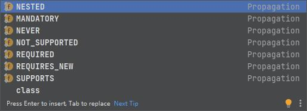

Spring事务
事务
定义：事务是逻辑上的一组操作，要么都执行，要么都不执行。
事务的特性（ACID）：这里在数据库提过了，再啰嗦一遍
原子性（Atomicity）： 一个事务（transaction）中的所有操作，或者全部完成，或者全部不完成，不会结束在中间某个环节。事务在执行过程中发生错误，会被回滚（Rollback）到事务开始前的状态，就像这个事务从来没有执行过一样。即，事务不可分割、不可约简。
一致性（Consistency）： 在事务开始之前和事务结束以后，数据库的完整性没有被破坏。这表示写入的资料必须完全符合所有的预设约束、触发器、级联回滚等。
隔离性（Isolation）： 数据库允许多个并发事务同时对其数据进行读写和修改的能力，隔离性可以防止多个事务并发执行时由于交叉执行而导致数据的不一致。事务隔离分为不同级别，包括未提交读（Read uncommitted）、提交读（read committed）、可重复读（repeatable read）和串行化（Serializable）。
持久性（Durability）: 事务处理结束后，对数据的修改就是永久的，即便系统故障也不会丢失。
MySQL保证原子性的原理：
如果想要保证事务的原子性，就需要在异常发生时，对已经执行的操作进行回滚，在 MySQL 中，恢复机制是通过 回滚日志（undo log） 实现的，所有事务进行的修改都会先记录到这个回滚日志中，然后再执行相关的操作。如果执行过程中遇到异常的话，我们直接利用 回滚日志 中的信息将数据回滚到修改之前的样子即可！并且，回滚日志会先于数据持久化到磁盘上。这样就保证了即使遇到数据库突然宕机等情况，当用户再次启动数据库的时候，数据库还能够通过查询回滚日志来回滚将之前未完成的事务。
Spring 支持两种方式的事务管理
编程式事务管理
通过 TransactionTemplate或者TransactionManager手动管理事务，实际应用中很少使用
声明式事务管理
基于@Transactional 的全注解方式使用最多，实际是通过 AOP 实现，使用 @Transactional注解进行事务管理的示例代码如下：
1 |
|
@Transactional 的常用配置参数总结（只列出了 5 个我平时比较常用的）：
| 属性名 | 说明 |
|---|---|
| propagation | 事务的传播行为，默认值为 REQUIRED， |
| isolation | 事务的隔离级别，默认值采用 DEFAULT， |
| timeout | 事务的超时时间，默认值为-1（不会超时）。如果超过该时间限制但事务还没有完成，则自动回滚事务。 |
| readOnly | 指定事务是否为只读事务，默认值为 false。 |
| rollbackFor | 用于指定能够触发事务回滚的异常类型，并且可以指定多个异常类型 |
Spring 事务传播行为
事务传播行为是为了解决业务层方法之间互相调用的事务问题:当事务方法被另一个事务方法调用时，必须指定事务应该如何传播。例如：方法可能继续在现有事务中运行，也可能开启一个新事务，并在自己的事务中运行。

- required（默认）：如果当前存在事务，则加入该事务；如果当前没有事务，则创建一个新的事务。
- requires_new：创建一个新事务，如果当前事务存在，把当前事务挂起。也就是说不管外部方法是否开启事务，requires_new修饰的内部方法会新开启自己的事务，且开启的事务相互独立，互不干扰。
- supports：支持使用当前事务，如果当前事务不存在，则不使用事务。
- not_supported：无事务执行，如果当前事务存在，把当前事务挂起。
- mandatory：强制，支持使用当前事务，如果当前事务不存在，则抛出Exception。
- never：无事务执行，如果当前有事务则抛出Exception。
- nested：嵌套事务，如果当前事务存在，那么在嵌套的事务中执行。如果当前事务不存在，则表现跟REQUIRED一样。
Spring 事务中的隔离级别
为了方便使用，Spring 也相应地定义了一个枚举类：Isolation
- TransactionDefinition.ISOLATION_DEFAULT: 使用后端数据库默认的隔离级别，Mysql 默认采用的 REPEATABLE_READ可重复读隔离级别 Oracle 默认采用的 READ_COMMITTED隔离级别.
- TransactionDefinition.ISOLATION_READ_UNCOMMITTED: 最低的隔离级别，允许读取尚未提交的数据变更，可能会导致脏读、幻读或不可重复读
- TransactionDefinition.ISOLATION_READ_COMMITTED: 允许读取并发事务已经提交的数据，可以阻止脏读，但是幻读或不可重复读仍有可能发生
- TransactionDefinition.ISOLATION_REPEATABLE_READ: 对同一字段的多次读取结果都是一致的，除非数据是被本身事务自己所修改，可以阻止脏读和不可重复读，但幻读仍有可能发生。
- TransactionDefinition.ISOLATION_SERIALIZABLE: 最高的隔离级别，完全服从ACID的隔离级别。所有的事务依次逐个执行，这样事务之间就完全不可能产生干扰，也就是说，该级别可以防止脏读、不可重复读以及幻读。但是这将严重影响程序的性能。通常情况下也不会用到该级别。
@Transactional(rollbackFor = Exception.class)注解
Exception 分为运行时异常 RuntimeException 和非运行时异常。在 @Transactional 注解中如果不配置rollbackFor属性,那么事务只会在遇到RuntimeException的时候才会回滚，加上 rollbackFor=Exception.class,可以让事务在遇到非运行时异常时也回滚。
当 @Transactional 注解作用于类上时，该类的所有 public 方法将都具有该类型的事务属性，同时，我们也可以在方法级别使用该标注来覆盖类级别的定义。如果类或者方法加了这个注解，那么这个类里面的方法或者该方法抛出异常，就会回滚，数据库里面的数据也会回滚。
如果事务不回滚的解决方案：
- 检查方法是不是public
- 检查异常是不是unchecked异常
- 如果是checked异常也想回滚的话，注解上写明异常类型即可@Transactional(rollbackFor=Exception.class)
Spring事务原理
Spring事务是由 AOP机制实现的，AOP机制的本质就是动态代理，也就是说：从 Spring IOC容器获取 bean时，Spring会为目标类创建代理，从而支持事务。
如果一个类或者一个类中的 public 方法上被标注@Transactional 注解的话，Spring 容器就会在启动的时候为其创建一个代理类，在调用被@Transactional 注解的 public 方法的时候，实际调用的是，TransactionInterceptor 类中的 invoke()方法。这个方法的作用就是在目标方法之前开启事务，方法执行过程中如果遇到异常的时候回滚事务，方法调用完成之后提交事务。
利用TransactionManagementConfigurationSelector给容器中会导入组件
- AutoProxyRegistrar
- 给容器中注册一个 InfrastructureAdvisorAutoProxyCreator 组件
- 利用后置处理器机制在对象创建以后，包装对象，返回一个代理对象（增强器），代理对象执行方法利用拦截器链进行调用；
- ProxyTransactionManagementConfiguration（给容器中注册事务增强器）
- 事务增强器要用事务注解的信息，AnnotationTransactionAttributeSource解析事务注解
- 事务拦截器
事务失效的8大原因：
- 数据库引擎不支持事务
- 没有被 Spring 管理：也就是加@Transactional注解的类和方法没有注入到Spring容器
- 方法不是 public 的
- 自身调用问题（经典问题）：
示例1：
1 |
|
update方法上面没有加 @Transactional 注解，调用有 @Transactional 注解的 updateOrder 方法，updateOrder 方法上的事务失效
示例2：
1 |
|
update 方法上加了 @Transactional，updateOrder 加了 REQUIRES_NEW 新开启一个事务，那么新开的事务失效
这是Spring事务失效的经典原因： spring框架是通过TransactionInterceptor类来控制事务开启,提交,回滚等, 它会创建一个目标类的代理类. 而在本示例中,update方法调用updateOrder方法时,并不是通过代理类去调用,而是通过this调用本身的方法updateOrder方法.所以updateOrder方法的事务并不会开启.
解决办法：
- 将updateOrder方法抽取到另一个XxxService方法中, 然后再将这个XxxService注入到OrderServiceImpl类中,通过xxxService.updateOrder()调用, 这样updateOrder方法的事务就会生效了.
- 第2种方式通过AopContext创建一个代理
1 |
|
数据源没有配置事务管理器
不支持事务（传播机制）
异常被吃了（捕获异常）：
如下面例子
1 |
|
try catch把异常吞了但是没有再抛出异常，那么事务就不会回滚就失效喽。需要在catch中再将异常抛出这样就会触发事务回滚
- 异常类型错误（checked异常失效）
如果抛出自定义继承Exception的异常是checked异常，但是spring事务默认回滚的是：RuntimeException。
如果是checked异常也想回滚的话，注解上写明异常类型即可@Transactional(rollbackFor=Exception.class)